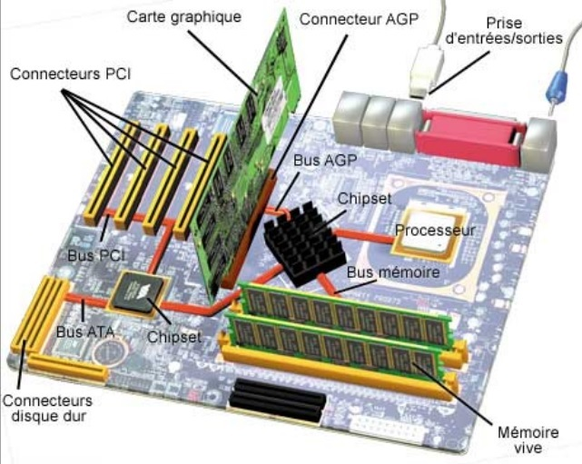

Systèmes d'exploitation
Introduction aux systèmes d'exploitation
3A - Cursus Ingénieurs
CentraleSupelec
2023/2024

L'informatique
- L'informatique
est la science du traitement automatique
de l’information. -
Le traitement automatique de l'information s'effectue
avec des programmes informatiques exécutés par des machines- les programmes (software) décrivent le traitement à réaliser,
- les machines (hardware) exécutent les programmes.

La notion d'ordinateur


- L’ordinateur désigne un équipement
informatique permettant
de traiter des informations en exécutant des instructions.- On lui donne des instructions (programme/logiciel)
- On lui donne des données (information)
- Il transforme les données
ENIAC - 1946
- Construit de 1943 à 1946
par John Mauchley
et John Eckert à l’université de Pennsylvanie - Premier ordinateur entièrement électronique (utilise des tubes à vide).
- Programmé pour résoudre tous
les problèmes calculatoires.

HP 3000 - 1972
- Le mini-ordinateur a été une innovation
des années 1970. - L'intégration de circuits intégrés
à grande échelle
conduisit au développement
des micro-processeurs.
Apple II - 1977
- Un des premiers ordinateurs personnels
à micro-processeur fabriqué à grande échelle - Conçu par
Steve Wozniak,
commercialisé
le 10 juin 1977 par Apple

Les ordinateurs d'aujourd'hui
- System on a Chip (SOC) : un système complet embarqué dans une puce (circuit intégré).
- Un circuit intégré peut comprendre :
- un ou plusieurs microprocesseurs
- de la mémoire
- des périphériques d'interface
- ou tout autre composant


L'architecture de Von Neumann
- L’architecture de von Neumann :
un modèle pour un ordinateur avec
une mémoire unique pour conserver- les instructions
- et les données
Von Neumann / l’ordinateur moderne
Von Neumann

ENIAC

Ordinateur personnel
source : la thèse d'Alexandre Brunet
Structure générale
d’un ordinateur


L'architecture
d'un microprocesseur
- Le microprocesseur (CPU) exécute
les instructions machines placées
en mémoire centrale. - Le CPU est constitué de quatre parties
- l'unité arithmétique et logique (UAL),
- les registres,
- l’unité de commande,
- le bus de communication interne.

Le fonctionnement
de l'ordinateur
Comment fonctionne un ordinateur ?


Tout cela n'est que des fils électriques ...
... qu'on allume et qu'on éteint.
... qu'on allume et qu'on éteint.
Autrefois : ENIAC
-
Premier ordinateur entièrement électronique :
- 18 000 tubes à vide
- 1 500 relais
- 20 registres de 10 chiffres décimaux
- programmé à l’aide de 6 000 commutateurs
- La programmation se faisait directement en langage machine
- Un seul programme à la fois pouvait s'exécuté.
- L’absence d'un OS obligeait le programmeur à charger manuellement le programme
Autrefois : IBM RAMAC 305

- Premier ordinateur à disque dur (l’IBM 350) commercialisé en septembre 1956 par IBM.
-
Composé des éléments suivants :
unité de traitement, imprimante, console, alimentation, disque dur, mémoire 5Mo. - L'unité de traitement est basée sur un tambour magnétique sur lequel est stocké le programme.
-
Un opérateur programme à l'aide de cartes perforées et inscrit
les données sur le tambour.
Automatiser les tâches
- Comment automatiser les tâches des opérateurs
et des programmeurs ? - Écrire un programme informatique qui:
- décide qui fait quoi et à quel moment
- fait le lien entre les applications et le matériel
Définition
“Un système d'exploitation est un ensemble de programmes
réalisant l’interface entre le matériel et les utilisateurs.”
- gère la partie matérielle
- sert de socle pour les applications

Historique/Types des OS

Historique/Types des OS
Historique/Types des OS
Historique/Types des OS

Historique/Types des OS
Historique/Types des OS

Historique/Types des OS

Rôles du système d'exploitation
- L’interface noyau-matériel prend en charge la gestion et le partage des ressources de la machine.
- L’interface noyau-utilisateur construit une machine virtuelle plus facile d’emploi et plus conviviale.
- Le noyau assure plusieurs grandes fonctionnalités.

Interface noyau-matériel
- Gérer l’accès et le partage des ressources matérielles (arbitrage).
- processeur
- mémoire centrale
- périphériques
- ...
- Cet arbitrage doit assurer:
- l'équité d'accès aux ressources
- la protection de l'accès aux ressource
- la cohérence des états des ressources

Interruption - IRQ
- L’OS s’interface avec la couche matérielle, par le biais
du mécanisme des interruptions (Interrupt ReQuest ou IRQ).- prendre connaissance des événements survenant sur le matérielle
-
L'IRQ est un signal (code) permettant à un dispositif externe
d’interrompre le processeur pour lancer un traitement particulier.
- À chaque code correspond une routine de traitement de l’OS.
- Les adresses des routines sont dans une table placée en
mémoire
(la table des vecteurs d’interruptions). - Les routines d’interruptions sont chargées
en mémoire au moment
du chargement de l'OS et exécutées en mode superviseur.
Prise en compte d’une IRQ
- Enregistrer $\rightarrow$ pile de l'OS
- l'adresse d'instruction interrompue
- l'état du processeur (registres)
- Passer en mode superviseur
- Charger la routine correspondant
à l'interruption - Contrôleur d'interruption
- prioriser les interruptions
Interface noyau-utilisateur
- Présenter une interface
entre
le hardware et les applications.- une interface simplifiée et unifiée.
- Présenter au-dessus de la machine physique, une machine virtuelle plus simple et plus conviviale.
- Créer l’illusion de vrais ressources physiques (processeur, mémoire, périphérique ...).

Les appels systèmes
- Fournir une interface d'accès
aux ressources matérielles.- par le biais de fonctions prédéfinies (appels/routines systèmes).
- les points d’entrées aux fonctionnalités de l'OS.
Exemples d'appels systèmes
- Contrôle de processus
sys_fork: créer un processussys_wait: attendre la terminaison d’un processussys_exit: terminer l’exécution d’un processussys_kill: Envoyer un signal à un processus
-
Gestion des fichiers
sys_open/sys_close: ouvrir/fermer un fichiersys_read/sys_write: lire/écrire des données dans un fichiersys_mkdir/sys_rmdir: créer/supprimer un répertoire
L'appel système fork()
Exemple sous UNIX
- L'instruction
os.chdir(path)permet de changer le répertoire courant d'un programme Python en cours d’exécution. - La commande
cd pathpermet de changer le répertoire courant depuis l’interpréteur de commandes (Shell). - Les deux exécutent la routine système
sys_chdir.
Modes d’exécutions
- Un programme utilisateur s’exécute dans un mode utilisateur :
- Un Jeu d’instructions restreint
pour protéger la machine.- ex. manipulation des IRQs interdite.
- Un Jeu d’instructions restreint
- L'OS s’exécute dans un mode privilégié
(mode superviseur):
- aucune restriction de droits n’existe.
Commutations de contexte
- A l'appel d'une fonction du noyau,
il y a passage au mode superviseur (commutation de contexte). -
A la fin de l’exécution de la fonction
du noyau, le programme repasse
au mode utilisateur.- commutation de contexte avec restauration du contexte utilisateur.
- reprise de l’exécution du programme utilisateur
Les causes de commutations
de contexte
- appelle d'une fonction système.
- exécute une opération illicite
(trappe ou exception). - prise en compte d’une interruption matérielle.
Trappes et appels systèmes sont parfois qualifiés d’interruptions logicielles
par opposition aux interruptions matérielles.
par opposition aux interruptions matérielles.
Interpréteur de commande (shell)
-
Langage de commandes :
l’interface de niveau utilisateur
avec le système d’exploitation. -
Interpréteur de commandes : exécuter
des commandes
de l'utilisateur en appellant
la routine système appropriée.
Interpréteur de commande (shell)
- Chaque système d’exploitation a son propre langage
de commandes :- MSDOS/Unix : console + clavier
- Mac/Windows : souris + clavier
- iOS/Android : boutons + écran tactile


Noyau d'un système d'exploitation
-
Gestion des entrées/sorties (I/O)
- contrôleurs, pilotes, ...
-
Gestion des processus
- ordonnancement, synchronisation, ...
-
Gestion mémoire
- allocation, gestion des espaces, ...
-
Gestion du stockage secondaire
- système de fichiers, ...
- Gestion de la sécurité

Organisation générale de l’OS
-
Interruptions : évènements produits
par le matériel. -
Exceptions : événements
générés
par le processeur. - Pilotes (drivers) : applications contrôlant les périphériques.
- Noyau (kernel) : application rendant des services généraux.
-
Appels Systèmes : demandes
de services.
Structure des OS
- Comment organiser les différentes fonctions d’un OS ?
- Qu’est-ce qui est dans le noyau (en mode Superviseur) ?
- Comment interagissent les différents composants ?
Noyaux monolithiques
- L’ensemble des fonctions/pilotes sont regroupés dans un seul bloc.
-
Ex. anciennes versions de Linux
ou certains vieux Unix.

source : https://fr.wikipedia.org
Noyaux monolithiques modulaires
- Seules les parties fondamentales de l'OS sont regroupées dans un bloc unique.
- Les autres fonctions (ex. les pilotes) sont regroupées dans des modules séparés.
- Ex. Linux ou Solaris.

source : https://fr.wikipedia.org
Systèmes à micro-noyaux
- Minimiser les fonctionnalités dépendantes
du noyau en plaçant des services l’extérieur. - Éloigner les services « à risque » des parties critiques de l'OS regroupées dans le noyau.
- Ex. Mach de Mac OS X.

source : https://fr.wikipedia.org
Systèmes à noyaux hybrides
-
Reprendre des concepts des noyaux monolithiques et des micro-noyaux
pour combiner les avantages des deux. - Ex. XNU de Mac OS X.

source : https://fr.wikipedia.org
En résumé ...
- Les OS monolithiques sont rapides mais délicats à maintenir.
- Les OS monolithiques modulaires ne sont pas faciles à concevoir (dépendances multiples).
- Les OS à micro-noyaux pur sont trop lents.
-
Les tendances :
- OS à noyaux hybrides.
- un micro-noyau étendus en fonctionnalités par d’autres composants.
Chargement d'un OS
-
L’OS est le premier programme exécuté lors de la mise en marche
de l'ordinateur, après l’amorçage (boot). - Le boot (boostrap) désigne les étapes successives du démarrage.
Les étapes du boot
- le POST test - Power On Self Test
- après un start ou un reset,
le processeur charge les premières instructions
à partir de la ROM du BIOS situées à l'adresse FFFF0. - des instructions de branchement vers un programme du BIOS
qui initialise et teste les fonctions vitales du hardware
- après un start ou un reset,
le processeur charge les premières instructions
- le chargement du MBR - Master Boot Record
- si le POST réussit, il consultera la RAM CMOS pour identifier le disque système dont le premier secteur est appelé MBR.
- le code du MBR teste la table de partition pour
charger
la partition contenant le secteur d'amorçage avec l'IPL - Initial Program
Load.
- l'IPL charge l'OS ou le bootmanager en RAM.
- l'OS est lancé
Synthèse
- Un système d’exploitation est un ensemble de programmes réalisant l’interface entre le matériel et les utilisateurs.
-
Les deux objectifs principaux de cette interface sont :
- construire au-dessus du matériel d’une machine virtuelle plus facile d’emploi et plus conviviale (accessible par des appels système);
- prendre en charge de la gestion de plus en plus complexe des ressources et le partage de celles-ci (gestion basée sur les interruptions).
-
Les fonctionnalités du système d’exploitation sont accessibles
par le biais des commandes ou des appels système.
Synthèse
- Le mode superviseur est le mode d’exécution du noyau du système d'exploitation.
- Le passage du mode utilisateur vers le mode superviseur peut être provoqué par un appel système, une trappe, ou par une IRQ.
- Il s’accompagne d'une commutation de contexte qui consiste à :
- sauvegarder le contexte utilisateur
- changer le mode d’exécution
- restituer le contexte utilisateur